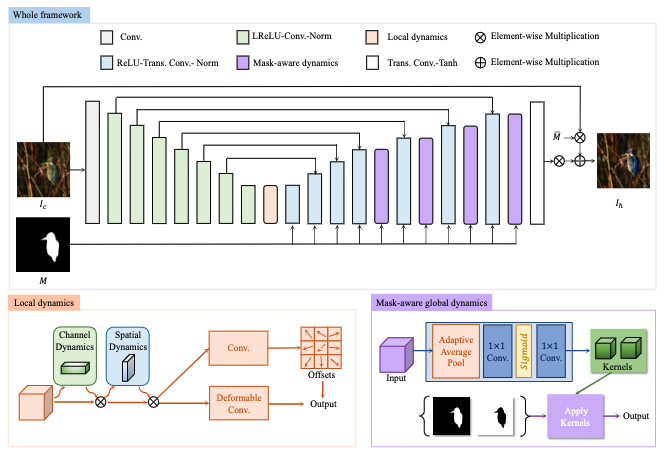
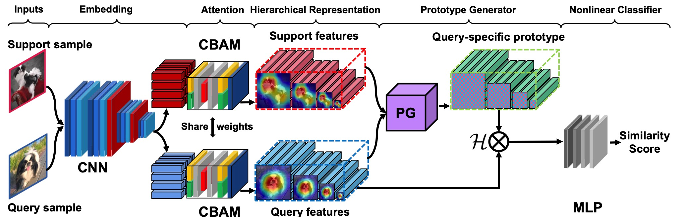
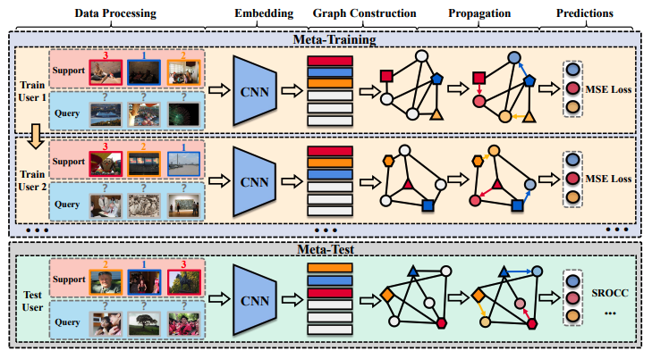
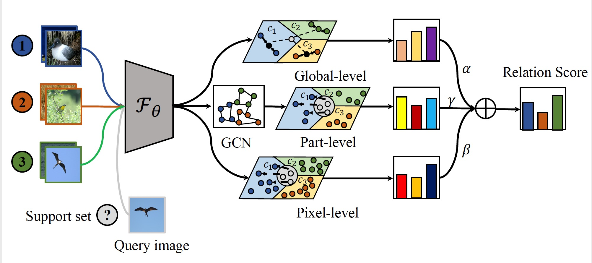
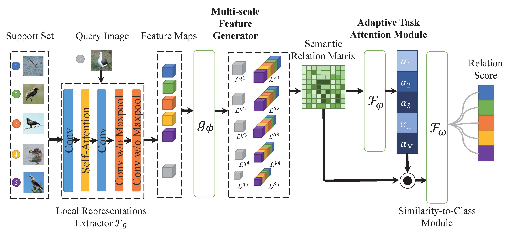
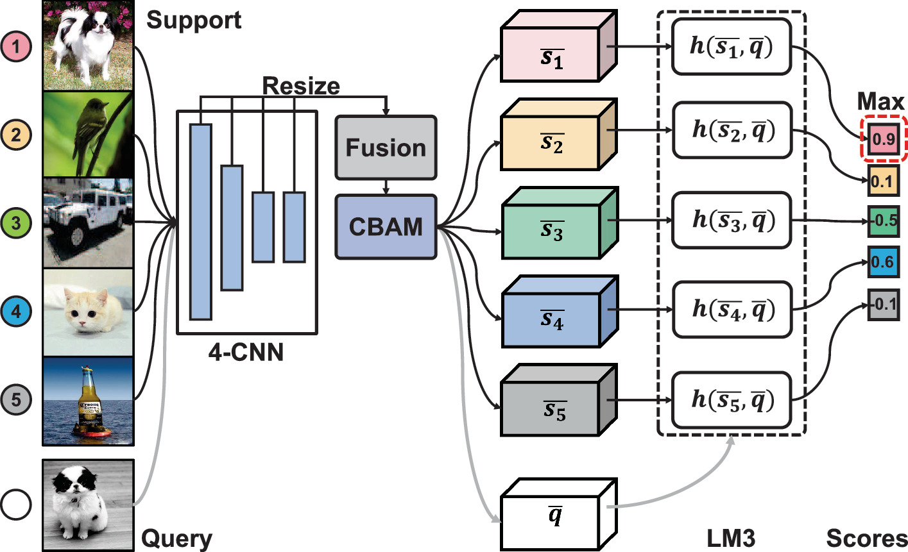
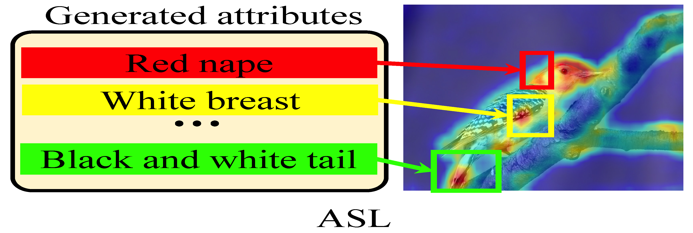

|
Haoxing Chen
(陈昊星)
|
Biography
-
2022.5-NOW Computer Vision Engineer Intern in AntGroup, Security & Risk Management, Machine Intelligence, HangZhou.
-
2021.6-2021.9 AI Research Intern in Samsung R&D Institute China, Xi'an.
-
2020.9-NOW M.E. in Automation and Artificial Intelligence Group, Nanjing University, NJU.
-
2016.8-2020.6 B.E. in School of Instrument Science and Engineering, South East University, SEU.
|
|
|
|
|
|
|
|
|
News
- [12/2022]: The code of our new work DiffusionInst (Paper) is released.
- [11/2022]: The code of our new work HDNet (Paper) is released.
- [07/2022]: One paper on “Affective computing” is accepted to ACM MM 2022.
- [06/2022]: One paper on “Few-shot learning” is accepted to ICPR 2022.
- [06/2022]: One paper on “Few-shot learning” is accepted to ICANN 2022.
- [05/2022]: One paper on “Few-shot learning” is accepted to SPL 2022.
Research Interest
I work in the field of few-shot learning, metric-learning, self-supervised learning, computer vision and machine learning. Currently, I focus on the following research topics:- Learning with Limited Data: The ability of a model to fit with limited data is essential and necessary due to the instance/label collection cost. How to extract and utilize knowledge from related tasks and domains is the key. Specifically, Haoxing mainly works on how to learn meta-knowledge for few-shot learning.
- Deepfake Detection & Generation: How to design better defense systems to deal with deepfake attacks has gained extensive attention in recent years. Specifically, Haoxing trys to generate more realistic images and design better detection methods with multi-modal learning.
Preprints
-
Zhangxuan Gu, Haoxing Chen , Zhuoer Xu, Jun Lan, Changhua Meng, Weiqiang Wang.
DiffusionInst: Diffusion Model for Instance Segmentation.
arXiv preprint arXiv: 2212.02773 , 2022.
[Paper] [Code] [BibTex] GitHub Stars -
Haoxing Chen , Zhangxuan Gu, Yaohui Li, Jun Lan, Changhua Meng, Weiqiang Wang, Huaxiong Li.
Hierarchical Dynamic Image Harmonization.
arXiv preprint arXiv: 2211.08639 , 2022.
[Paper] [Code] [BibTex] -
Haoxing Chen , Huaxiong Li, Yaohui Li, Chunlin Chen.
Sparse Spatial Transformers for Few-Shot Learning.
arXiv preprint arXiv: 2109.12932 , 2021.
[Paper] [Code] [BibTex] -
Yaohui Li , Huaxiong Li, Haoxing Chen, Chunlin Chen.
Hierarchical Representation based Query-Specific Prototypical Network for Few-Shot Image Classification.
arXiv preprint arXiv: 2103.11384 , 2021.
[Paper] [BibTex]

|
|
|  |
|

|
|
|  |
|
Publications
Conference Articles:
-
Yaohui Li, Yuzhe Yang, Huaxiong Li,Haoxing Chen, Liwu Xu, Leida Li, Yaqian Li, Yandong Guo.
Transductive Aesthetic Preference Propagation for Personalized Image Aesthetics Assessment.
In: ACM Multimedia(ACM MM), 2022.(CCF-A)
[Paper] [BibTex] -
Haoxing Chen , Huaxiong Li, Yaohui Li, Chunlin Chen.
Multi-level Metric Learning for Few-shot Image Recognition.
In: International Conference on Artificial Neural Networks(ICANN), 2022.(CCF-C)
[Paper][Code] [BibTex] -
Haoxing Chen , Huaxiong Li, Yaohui Li, Chunlin Chen.
Multi-scale Adaptive Task Attention Network for Few-Shot Learning.
In: International Conference on Pattern Recognition(ICPR), 2022.(CCF-C)
[Paper] [Code] [BibTex] -
Yaohui Li , Huaxiong Li, Haoxing Chen, Chunlin Chen.
Local Mutual Metric Network for Few-Shot Image Classification.
In: Chinese Conference on Pattern Recognition and Computer Vision(PRCV) , 2021. (CCF-C)
[Paper] [BibTex] -
Haoxing Chen , Huaxiong Li, Yaohui Li, Chunlin Chen.
Shaping Visual Representations with Attributes for Few-Shot Recognition.
IEEE Signal Process. Lett., vol. 29, pp. 1397-1401, 2022.(CAA-B, SCI/SCIE, Impact Factor: 3.201)
[Paper] [Code] [BibTex]
|  |
|
|  |
|
|  |
|
|  |
|
Journal Articles:
|  |
|
Awards
- 2018, First Prize of Jiangsu Province in the National Mathematical Modelling Competition.
- 2018, National Special Award of the 8th Education Robot Competition Of China (ERCC).
- 2019, Meritorious Prize in the Mathematical Contest In Modeling (MCM).
- 2022, Chinese National Scholarship.
Haoxing's Services
- AAAI'23, PAKDD'22, ICPR'22, Reviewer
- IEEE Trans on TIP/TNNLS/TCSVT, Reviewer